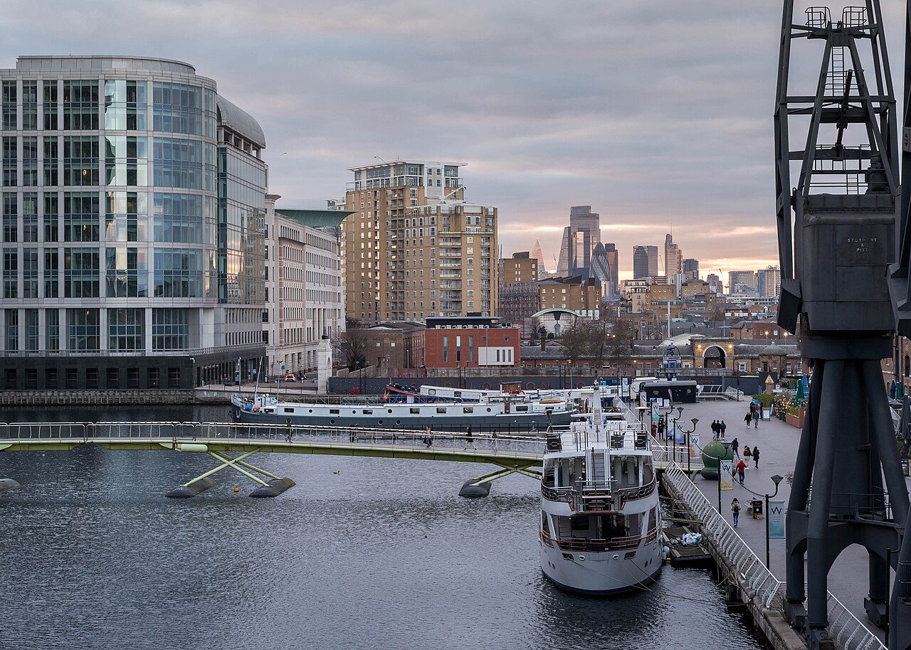
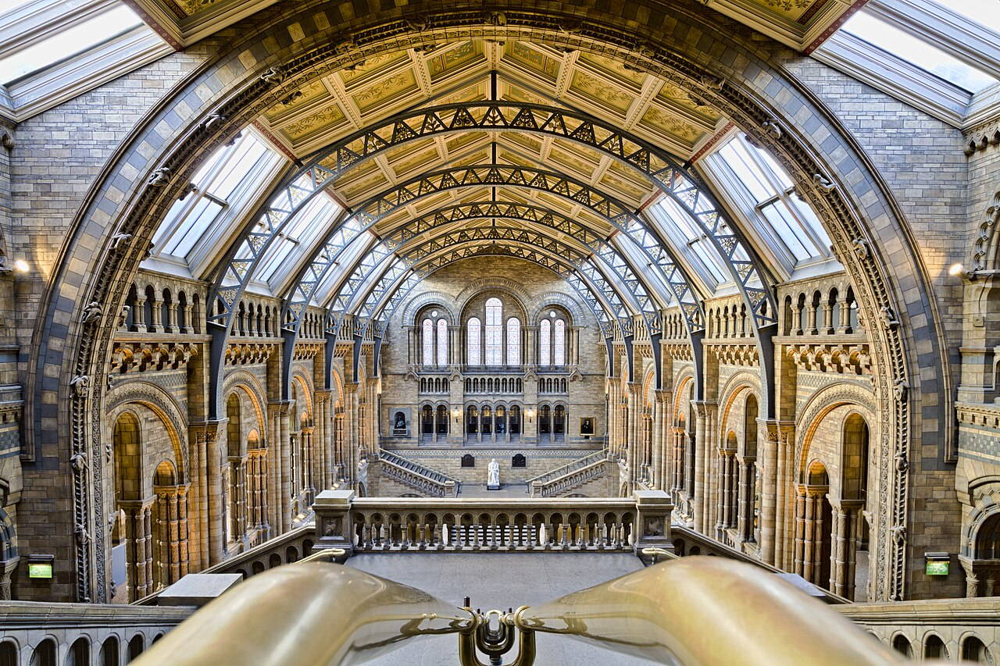
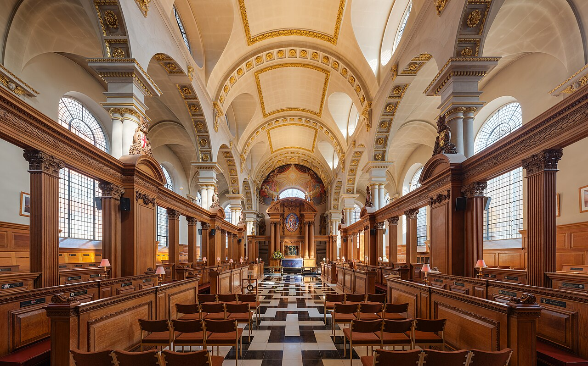

OTIUM — практика нарочитого досуга. В античном смысле otium — не побег от работы, а время, когда внимание возвращается к памяти, пейзажу и мысли — без прикладного дедлайна.
Мы выстраиваем маршруты для неспешного присутствия, а не для чек-листа достопримечательностей: важно быть в месте, а не «потреблять» виды.
OTIUM — не туроператор. Это приглашение пройтись, остановиться и оставить маршрут незавершённым, если свет на фасаде заслуживает ещё минуты.
Исторические и справочные гербы
London
Путеводитель. Объектов в этом выпуске: 36.
Историческая справка
Лондон — столица Соединённого Королевства и крупнейший город Британских островов.
Римский Лондиниум, средневековый Сити, имперская столица и глобальный финансовый центр XXI века. Темза, королевские резиденции, музеи бесплатного входа и многоязычные районы делают Лондон узлом культуры и науки.
Вторая мировая война и блиц оставили следы; послевоенное восстановление и распад империи изменили роль метрополии. Сегодня Лондон — финансовый и культурный глобальный узел с многоязычным населением и богатыми музеями.
Borough Market
Borough Market — landmark in London.
Факты и детали
Check opening hours and ticketing on official sites before travel.
Crowds peak on weekends and public holidays.
British Museum
Адрес: Great Russell Street, Bloomsbury | Стиль: Greek revival façade; modern Great Court glass roof | Период: 1753 founding; Great Court roof 2000 (Foster)
National museum of human history, art, and culture with free general admission. The Great Court wraps the Reading Room under a glass canopy.
Факты и детали
Highlights include the Rosetta Stone and the Parthenon sculptures (subject to loan policy).
Timed tickets apply to major temporary exhibitions.
История
Grew from Sir Hans Sloane's bequest into a global collection; the Great Court project opened the inner court to visitors.
Значение
One of the world's most visited museums and a Bloomsbury anchor for slow afternoons.
Buckingham Palace
Buckingham Palace — landmark in London.
Факты и детали
Check opening hours and ticketing on official sites before travel.
Crowds peak on weekends and public holidays.
Buckingham Palace
Адрес: Westminster | Стиль: Neoclassical façade; state rooms in palatial sequence | Период: 1703 house; 19th c. enlargement (Nash, Blore)
Working royal residence and London headquarters of the monarch. The garden façade and Victoria Memorial frame the approach from the Mall.
Факты и детали
Changing of the Guard draws crowds at the front gates on scheduled mornings.
State Rooms open to the public on selected summer dates.
История
Began as Buckingham House; George IV and Victoria expanded it into the palace state visitors recognise today.
Значение
The public face of the modern monarchy in central London.
Camden Market
Camden Market — landmark in London.
Факты и детали
Check opening hours and ticketing on official sites before travel.
Crowds peak on weekends and public holidays.
Canary Wharf
Canary Wharf — landmark in London.
Факты и детали
Check opening hours and ticketing on official sites before travel.
Crowds peak on weekends and public holidays.
Churchill War Rooms
Churchill War Rooms — landmark in London.
Факты и детали
Check opening hours and ticketing on official sites before travel.
Crowds peak on weekends and public holidays.
City of London from Canary Wharf.jpg
City of London from Canary Wharf.jpg

City of London from Canary Wharf.jpg — landmark in London.
Covent Garden piazza
Адрес: West End | Стиль: Neoclassical market hall | Период: Inigo Jones square 1630s; glass roof 1830s
Buskers under the iron-and-glass market roof with opera house and boutique lanes radiating outward.
Факты и детали
Apple Market crafts rotate daily vendors.
Street performers must audition for pitch slots.
История
Fruit-and-flower market moved out; tourism and retail filled the iron shed.
Значение
Pedestrian theatre between Strand and Seven Dials.
Fazl Moschee.JPG
Fazl Moschee.JPG
Fazl Moschee.JPG — landmark in London.
Hyde Park and Serpentine
Адрес: Westminster | Стиль: English landscape park | Период: 1637 royal park; Serpentine 1730s
Hintze Hall blue whale skeleton under painted ceiling tiles of living species categories.
Факты и детали
Earthquake simulator queues in the geology wing.
Night openings target adults with music and bars.
История
Split from British Museum natural collections into South Kensington's museum quarter.
Значение
Family gateway to science next door to the V&A.
Natural History Museum HDR.jpg
Natural History Museum HDR.jpg

Natural History Museum HDR.jpg — landmark in London.
Notting Hill Portobello
Notting Hill Portobello — landmark in London.
Факты и детали
Check opening hours and ticketing on official sites before travel.
Crowds peak on weekends and public holidays.
Palace of Westminster
Palace of Westminster — landmark in London.
Факты и детали
Check opening hours and ticketing on official sites before travel.
Crowds peak on weekends and public holidays.
Palace of Westminster
Адрес: City of Westminster, London | Стиль: Perpendicular Gothic revival (Barry and Pugin) | Период: 11th c. onward; rebuilt after 1834 fire
Seat of the UK Parliament: the Commons and Lords meet in chambers flanking Westminster Hall. Elizabeth Tower (Big Ben) rises at the north end of the complex.
Факты и детали
Westminster Hall predates the Victorian rebuilding and still hosts ceremonial events.
The clock tower is widely nicknamed Big Ben after its great bell.
История
Royal palace origins on Thorney Island; fire destroyed much of the medieval fabric in 1834, leading to the present Gothic revival ensemble.
Значение
A working legislature and one of London's most photographed riverfront silhouettes.
Palace of Westminster clock
Palace of Westminster clock — landmark in London.
Факты и детали
Check opening hours and ticketing on official sites before travel.
Crowds peak on weekends and public holidays.
Royal Observatory Greenwich
Royal Observatory Greenwich — landmark in London.
Факты и детали
Check opening hours and ticketing on official sites before travel.
Crowds peak on weekends and public holidays.
Shakespeare's Globe
Shakespeare's Globe — landmark in London.
Факты и детали
Check opening hours and ticketing on official sites before travel.
Crowds peak on weekends and public holidays.
St Bride's Church, London - Diliff.jpg
St Bride's Church, London - Diliff.jpg

St Bride's Church, London - Diliff.jpg — landmark in London.
St Paul's Cathedral
St Paul's Cathedral — landmark in London.
Факты и детали
Check opening hours and ticketing on official sites before travel.
Crowds peak on weekends and public holidays.
St Paul's Cathedral
Адрес: Ludgate Hill, City of London | Стиль: English Baroque; great dome | Период: 1675–1711 (Wren)
Anglican cathedral crowned by Wren's dome. Whispering Gallery climbs and crypt tombs (including Nelson and Wellington) extend a tower visit.
Факты и детали
The present church replaced the medieval cathedral destroyed in the Great Fire of 1666.
The dome was for centuries the tallest structure in London.
История
Wren's design survived wartime damage; the interior was conserved and re-presented for modern worship and tourism.
Значение
City of London landmark and national ceremonial church.
St Paul's Cathedral
St Paul's Cathedral — landmark in London.
Факты и детали
Check opening hours and ticketing on official sites before travel.
Crowds peak on weekends and public holidays.
St Pauls aerial (cropped).jpg
St Pauls aerial (cropped).jpg
St Pauls aerial (cropped).jpg — landmark in London.
Tate Britain
Tate Britain — landmark in London.
Факты и детали
Check opening hours and ticketing on official sites before travel.
Crowds peak on weekends and public holidays.
Tate Modern
Адрес: Bankside, Southwark | Стиль: Industrial modernism adapted by Herzog & de Meuron | Период: 1947–1963 power station; museum opened 2000
International modern and contemporary art in the converted Bankside Power Station. The Turbine Hall hosts large-scale installations.
Факты и детали
General collection entry is free; special exhibitions are ticketed.
The Switch House extension added viewing levels over the Thames.
История
Oil-fired Bankside station closed in 1981; adaptive reuse preserved the chimney and brick massing as a riverside cultural hub.
Значение
South Bank counterpart to St Paul's across the Millennium Bridge.
Tower Bridge
Адрес: Tower Bridge Road, London | Стиль: Victorian bascule and suspension bridge | Период: 1886–1894
Combined bascule and suspension bridge near the Tower of London. High-level walkways now host exhibitions and river views.
Факты и детали
Hydraulic power originally lifted the roadways; electric drive replaced it in the 1970s.
The bridge is often mistaken for London Bridge upstream.
История
Designed by Horace Jones and John Wolfe Barry to ease road traffic while preserving tall-ship access to the Pool of London.
Значение
London's most iconic Thames crossing in popular imagery.
Tower of London
Адрес: Tower Hill | Стиль: Norman keep; medieval fortifications | Период: 11th c. White Tower; medieval curtain walls
Historic castle and former royal mint housing the Crown Jewels. Yeoman Warders lead tours mixing chronicle and anecdote.
Факты и детали
William the Conqueror began the White Tower to secure the City.
Ravens are kept on site by tradition tied to the tower's fate.
История
Palace, prison, menagerie, and armoury roles layered through the Middle Ages and Tudors into a ceremonial fortress today.
Значение
UNESCO-listed ensemble and a dense chapter of English monarchy in stone.
Victoria and Albert Museum
Victoria and Albert Museum — landmark in London.
Факты и детали
Check opening hours and ticketing on official sites before travel.
Crowds peak on weekends and public holidays.
Westminster Abbey
Адрес: Dean's Yard, Westminster | Стиль: English Gothic | Период: 13th c. Gothic core; later chapels and towers
Royal peculiar church and coronation site. Poets' Corner and royal tombs reward a longer visit than a façade photo.
Факты и детали
Coronations have taken place here since 1066 (William the Conqueror).
Many monarchs and notable Britons are buried or commemorated inside.
История
Edward the Confessor's church was replaced by the present Gothic building under Henry III and successors.
Значение
State ceremony, music, and medieval architecture converge beside Parliament Square.
Westminster Abbey
Westminster Abbey — Gothic abbey church in London, England, UK.
Факты и детали
Check opening hours and ticketing on official sites before travel.